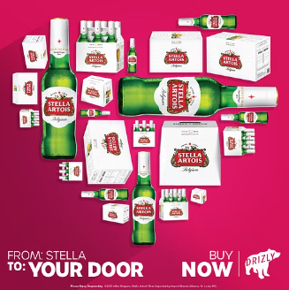
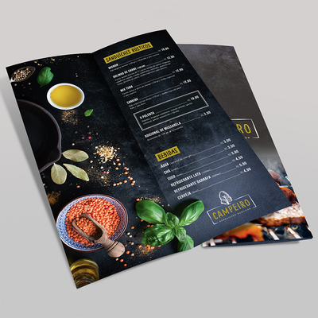
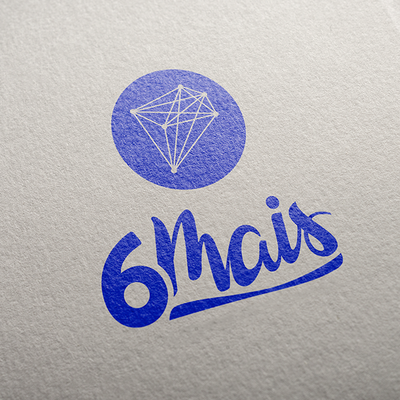
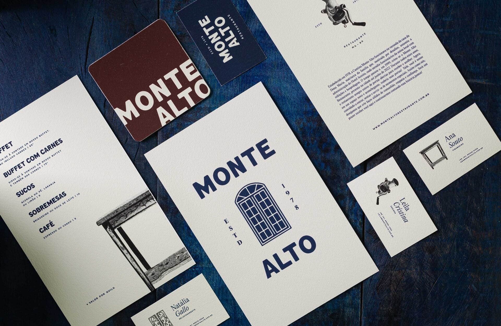

BLOG
Dicas de Design:
Como Escolher as Cores Perfeitas para Sua Marca? Utilize uma paleta de cores que comunique a essência da sua marca e seja visualmente atraente.
5 Princípios Essenciais do Design Gráfico: Fundamentos de alinhamento, contraste, repetição, proximidade e equilíbrio.
Alinhamento garante que os elementos estejam organizados de maneira ordenada e lógica, facilitando a leitura e mantendo a coesão do design. Ele conecta visualmente os elementos, criando uma sensação de estrutura. Contraste destaca informações importantes ao criar diferenças visuais marcantes, seja por cor, tamanho ou tipografia. Ele direciona o foco do espectador para os pontos-chaves e melhora a legibilidade. Repetição reforça a consistência visual ao reutilizar elementos como cores, fontes ou padrões. Isso cria unidade e coesão em projetos de múltiplas páginas ou peças de branding. Proximidade organiza os elementos relacionados de forma agrupada, facilitando a compreensão e criando associações lógicas. Isso reduz a desordem e torna o design mais intuitivo. Equilíbrio distribui o peso visual da composição de forma simétrica ou assimétrica, garantindo harmonia. Ele evita que o design pareça carregado ou desequilibrado, criando uma estética estável e agradável.
Como Escolher as Cores Perfeitas para Sua Marca? Utilize uma paleta de cores que comunique a essência da sua marca e seja visualmente atraente.
1- Simplicidade; 2- Originalidade; 3- Tipografia; 4- Cores; 5- Versatilidade; 6- Testes.
   Novidades do Mundo do Design:
Tendências de Design Gráfico para 2024: Novas tendências do design gráfico que estão moldando o mercado, desde o minimalismo até o design 3D e o uso de tipografia ousada.
Confira o artigo sobre tendências de design no marketing.